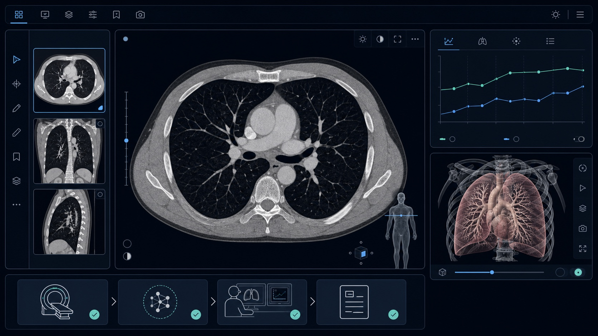
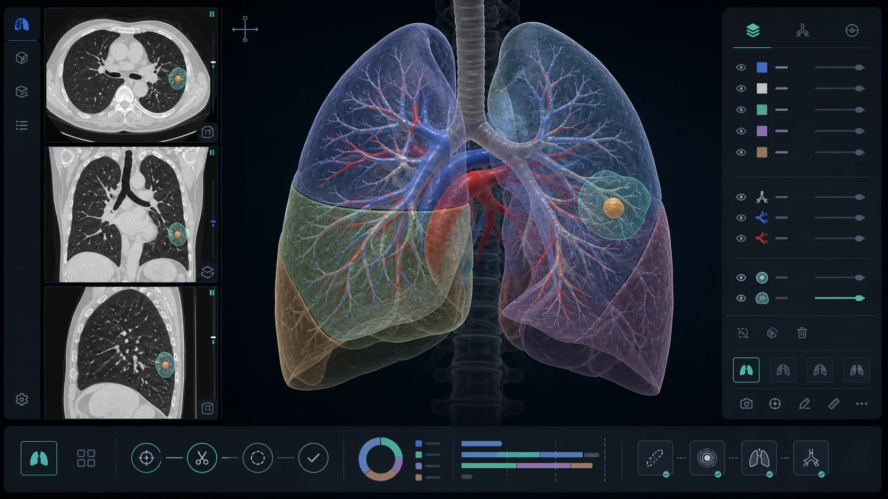
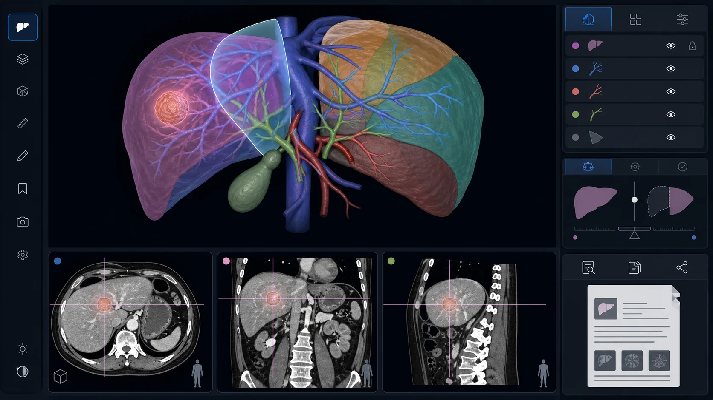
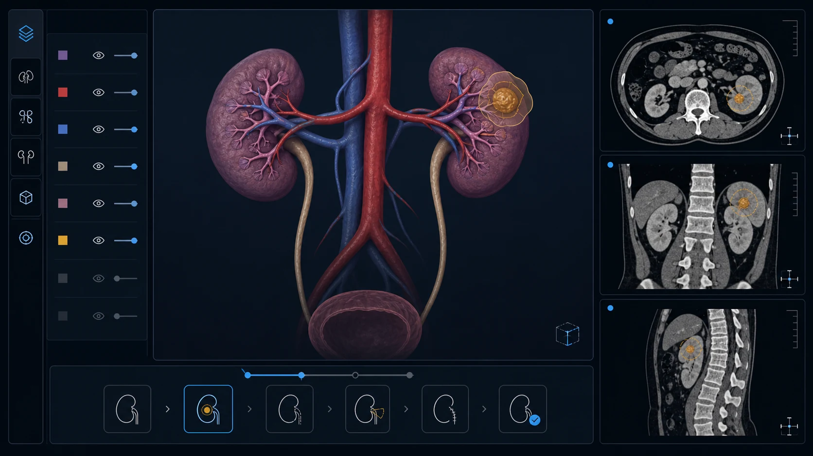

Chest CT
CT Lung
Detects small pulmonary nodules in chest CT images, compares nodule development and supports clinical decision-making.
CE markedFDA clearedUKCA markedNMPA approved
View details →
Advanced AI medical imaging solutions for screening, diagnosis, intervention and research workflows.
Imaging diagnosis
Image for reference only.
Detects small pulmonary nodules in chest CT images, compares nodule development and supports clinical decision-making.

Identifies suspected chest fractures in chest CT images and provides timely alerts.

Rapidly identifies and alerts clinicians to suspected intracranial haemorrhage in brain CT images.

Automatically analyses chest radiographs and assesses the probability of chest abnormalities, including tuberculosis.

Segments and reconstructs coronary vessels from CT images and identifies coronary artery stenosis.

Creates whole-lung 3D reconstructions from chest CT images to support anatomical assessment and thoracic surgical planning.

Creates liver 3D reconstructions from abdominal CT images to support anatomical assessment and surgical planning.

Creates kidney and urinary-system 3D reconstructions from abdominal CT images for anatomical assessment and surgical planning.
Combines multimodal medical models with local computing to support voice documentation, structured record generation, content quality checks, decision support and integrated health reports.
Integrated hardware and AI software designed for efficient screening and follow-up.

Combines adaptive low-dose imaging, automatic focusing, AI bone-age assessment, adult-height prediction, follow-up tracking and structured growth reports.
View details →
Uses intelligent radius and ulna segmentation for consistent measurement positioning, supports repeat follow-up at the same site and generates reports automatically.
View details →
Detects neural and muscle electrical signals, recognises movement intent with AI algorithms, and translates that intent into independent and coordinated five-finger movements for upper-limb amputees.
Focused AI workflows for cardiovascular and neurovascular imaging.

Automates coronary reconstruction, vessel naming, plaque and stenosis analysis, calcium scoring, CT-FFR assessment and structured reporting.
View details →
Supports automated vessel extraction, plaque and stenosis assessment, aneurysm detection, cerebral perfusion analysis and structured reports.
View details →